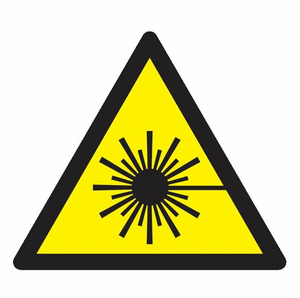

Hazard Awareness – Laser
The CEDT and Engineering Physics use lasers in a range of applications, including photoluminescence, ellipsometry, grating fabrication, and thin film stress analysis. McMaster's laser safety program is documented in RMM 703; anyone working with Class 3B or Class 4 lasers is required to complete Laser Safety Training. See Mandatory Training for current course details.

Potential HazardsThe most significant laser risk comes from absorption of laser radiation in tissue. If tissue cannot dissipate the resulting heat fast enough, it can burn and suffer permanent damage. The eye is especially vulnerable, since it focuses incoming light onto the retina, concentrating the energy density dramatically. Retinal burns can occur essentially instantaneously.
A secondary but still serious risk is photochemical damage from short-wavelength (UV/blue) radiation. Additional hazards in laser operation can include electrical shock from pump/power supplies, burns, toxic fumes from ablated target material, and fire.
Hazard Classification
Lasers are classified according to the ANSI Z136.1 standard, based on their potential to cause injury, considering wavelength and power. The table below summarizes the current classification system:
| Class | General Description |
|---|---|
| Class 1 | Not capable of emitting hazardous radiation under normal operating conditions; exempt from controls. |
| Class 2 | Visible lasers not capable of retinal damage under normal viewing, but could cause damage if stared at directly for an extended period. |
| Class 3R | Visible lasers (the modern designation that replaced "Class 3a") generally not hazardous if viewed only momentarily and without optical instruments. |
| Class 3B | Hazardous if viewed directly or via specular reflection. Diffuse reflections are generally not hazardous. |
| Class 4 | Hazardous even via diffuse reflection. Can pose fire and skin burn risk in addition to eye damage. |
Maximum Permissible Exposure & Protective Eyewear
Wherever possible, laser beams should be fully enclosed; this is the most effective control for Class 3B and Class 4 lasers. When direct operator interaction is unavoidable (e.g., during beam alignment), appropriate laser safety eyewear becomes essential. Eyewear must be selected based on the Maximum Permissible Exposure (MPE) for the specific laser's wavelength and power. Eyewear rated for one wavelength may provide no protection at another, which matters for multi-wavelength sources.
Selecting appropriate eyewear requires knowing the laser's wavelength(s) and power/irradiance, and matching these against the optical density (OD) rating needed to bring transmitted power below the MPE. Because this calculation is highly specific to the laser in use, consult your supervisor and the manufacturer's documentation before choosing eyewear. Do not assume eyewear used for one laser is appropriate for another.
Non-Beam Hazards
Non-beam-related laser hazards include:
- Electrical hazards from high-voltage pump or power supplies
- Chemical hazards from the lasing medium itself, or from plume material ablated off a target during laser processing
Lasers built or modified in-house by CEDT or Engineering Physics personnel should be labelled with their classification, consistent with manufacturer practice.
Related Resources
Sources: McMaster University Risk Management Manual RMM 703 (Laser Safety Program), effective September 2020; ANSI Z136.1 Laser Safety Standard.